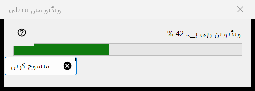
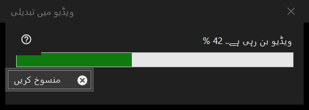

ویڈیو میں تبدیلی
یہ کس مقصد کے لیے ہے
ویڈیو میں تبدیلی کی پیش رفت کی ونڈو: یہ متحرک GIF، WebP یا APNG کو MP4 میں بدلتی ہے اور پھر اصل فائل حذف کر دیتی ہے۔ یہ تبدیلی کی تصدیق کے بعد کھلتی ہے، کام ختم ہونے تک ویور کے اوپر رہتی ہے، اور اس میں ایک ہی بٹن ہے، منسوخ کریں۔


اس ترتیب میں
- کوئی متحرک تصویر دکھائیں۔
- تصویر کے مینو میں ویڈیو میں تبدیل کریں.. چنیں، یا ٹول بار کا ویڈیو میں تبدیل کریں بٹن دبائیں؛ دونوں صرف تب موجود ہوتے ہیں جب اسکرین پر کوئی اینیمیشن ہو، اور کوئی کی بورڈ شارٹ کٹ نہیں ہے۔
- تصدیق پڑھیں اور تبدیل کریں دبائیں۔
- اگر FFmpeg ڈاؤن لوڈ کرنے کو کہا جائے تو ہاں کہیں۔
- بار دیکھیں، یا منسوخ کریں دبائیں۔
- ویور نیا MP4 کھول دیتا ہے۔
عناصر
تبدیلی شروع کرنا
یہ کمانڈ صرف اینیمیشنز کے لیے پیش کی جاتی ہے، ساکن تصویر یا ویڈیو کے لیے کبھی نہیں، اور ویور اسے محفوظ کنٹینر کے لیے، یا ایسی جگہ کے لیے رد کر دیتا ہے جہاں فائل کے پاس کچھ لکھا نہیں جا سکتا۔ کام شروع ہوتے ہی پلے بیک رک جاتا ہے۔
تصدیق
اس میں لکھا ہوتا ہے: اصل فائل نئے MP4 میں بدلی جائے گی، اور اصل فائل ری سائیکل بن میں گئے بغیر مستقل طور پر حذف ہو جائے گی۔ اگر اینیمیشن میں شفافیت ہو تو یہ اضافہ کرتا ہے: شفافیت کو سیاہ رنگ سے بھر دیا جائے گا۔ طے شدہ جواب منسوخ کریں ہے۔ چیک باکس پروگرام بند ہونے تک دوبارہ نہ پوچھیں صرف ویور بند ہونے تک چلتا ہے؛ یہ کبھی محفوظ نہیں ہوتا۔
FFmpeg
تبدیلی FFmpeg استعمال کرتی ہے، جو پروگرام کا حصہ نہیں ہے۔ اگر وہ موجود نہ ہو تو ڈاؤن لوڈ کے بارے میں ایک بار پوچھا جاتا ہے (سوال میں سائز دکھایا جاتا ہے؛ فائل پروجیکٹ کی سائٹ سے آتی ہے، مقامی طور پر محفوظ ہوتی ہے اور GPL کے تحت آزاد سافٹ ویئر ہے)۔ نہیں کہنے پر عمل یہیں رک جاتا ہے اور کچھ بنایا یا حذف نہیں کیا جاتا۔
پیش رفت کی ونڈو
عنوان میں ویڈیو بن رہی ہے.. فیصد کے ساتھ لکھا ہوتا ہے، اور بار اس کے ساتھ چلتا ہے۔ جب اینیمیشن کی لمبائی معلوم نہ ہو تو بار بغیر کسی عدد کے بس آگے پیچھے چلتا رہتا ہے۔ منسوخ کریں، Esc کلید اور بند کرنے کا بٹن تینوں کا مطلب ایک ہی ہے: ونڈو کچھ دیر رکی رہتی ہے جب تک انکوڈر واقعی رک نہ جائے، پھر بند ہو جاتی ہے اور ویور بتاتا ہے تبدیلی منسوخ کر دی گئی۔ اس دوران ویور استعمال نہیں کیا جا سکتا۔
آپ کو کیا ملتا ہے
اسی فولڈر میں اسی نام کا ایک MP4 (اگر نام لیا جا چکا ہو تو قوسین میں ایک عدد جوڑ دیا جاتا ہے)، اینیمیشن کے فریم ریٹ پر، 1 سے 50 فریم فی سیکنڈ کے درمیان۔ وہ ایک عارضی نام سے لکھا جاتا ہے اور تیار ہونے پر اس کا نام بدلا جاتا ہے۔ اصل فائل تبھی حذف ہوتی ہے جب MP4 اپنے آخری نام سے موجود ہو اور جانچ لیا گیا ہو کہ اس میں پوری اینیمیشن ہے۔ اسٹیٹس بار میں مکمل لکھا آتا ہے اور ویور ویڈیو دکھاتا ہے۔
جب کچھ غلط ہو
اصل فائل رہتی ہے اور اسٹیٹس بار وجہ بتاتا ہے: ویڈیو نہیں بنائی جا سکی (وجہ کے ساتھ)، ویڈیو بن گئی لیکن اصل فائل حذف نہیں ہو سکی، یا ویڈیو کی تکمیل کی جانچ نہیں ہو سکی اور اصل فائل رکھی گئی۔ ناکام کوشش اصل فائل کو چھوئے بغیر چھوڑتی ہے، عارضی فائل ہٹا دیتی ہے اور تفصیل لاگ میں لکھتی ہے۔